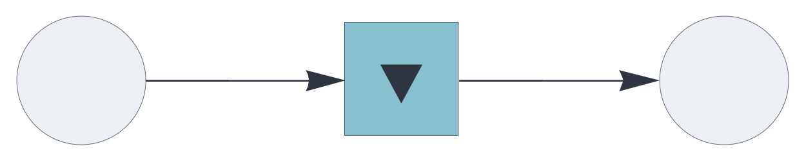
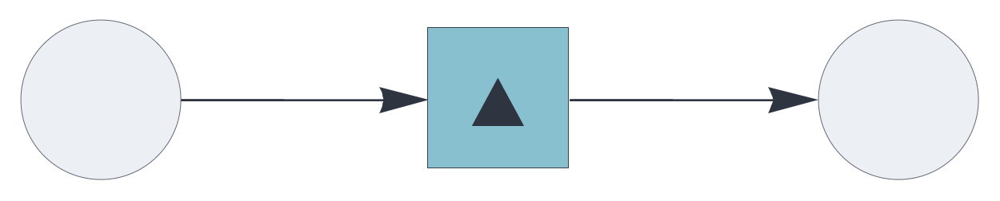
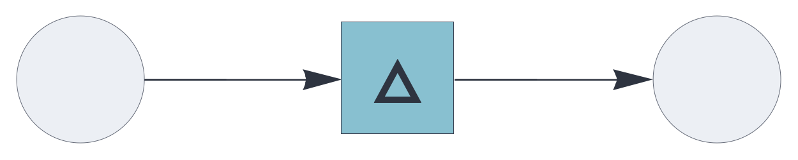
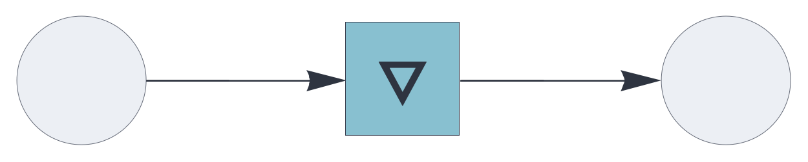
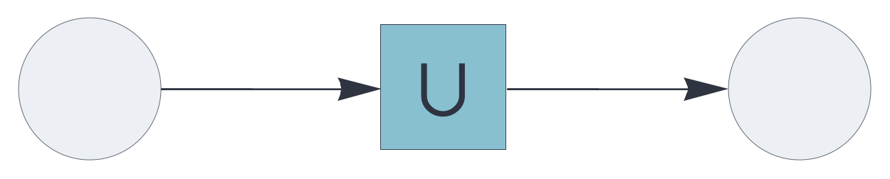
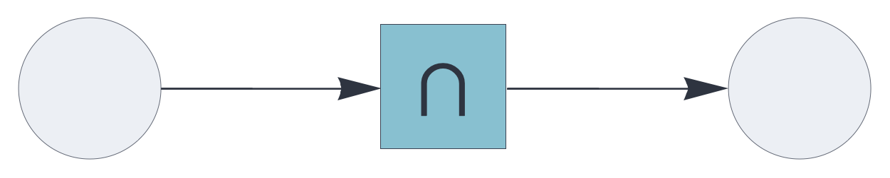

CIRCUIT COMPONENTS
auto
Auto-associative topological memory component, storing items and hypergraphs.
See also: https://creatingintelligence.org/#auto-associative-memory
Details and properties
- Incrementally learns auto-associations at every execution cycle.
- Uses update rule plugins to control the mechanics of state updates.
- Controls sparsity through stochastic subsampling
mechanisms.
- Deduplicates incoming multisets and inhibitory signals, internally processing the underlying set of unique elements.
- Supports multiple data blocks, joined internally as the memory’s shared input/output layer. The hyperparameters of input and output blocks must be identical.
| Property | Default | Description |
|---|---|---|
send |
required | [integer,...]
representing one or more output slots |
receive |
required | same as send, with
optional pathway tags |
plugin |
replacement |
auto-associative update rule |
threshold |
automatic | relative auto-associative pattern matching threshold |
rate_limit |
infinite | subsample input if it exceeds the specified relative rate limit |
decimate |
1 | proportional stochastic decimation |
learn |
P |
Use standard style options to customize the component’s appearance in circuit schematics.
Auto-associative memory with replacement update
As the default update rule for the auto component,
replacement substitutes the memory’s state with the
retrieved value.
This is the classic auto-associative setup, most useful for pattern completion, denoising, and item stores. With this configuration, the auto-associative memory converges to a stable state. Stability is normally reached with just a single cycle because denoising iterations are already encapsulated within the memory retrieval algorithm.
{ "hyperparameters": {"default": [1000, 10]},
"dataflow": [
{"component": "input", "send": [1]},
{"component": "auto", "plugin": "replacement",
"send": [2], "receive": [1]},
{"component": "output", "receive": [2]}
]}
Auto-associative memory with residual update
As a plugin for the auto
component, the residual update rule removes the
retrieved pattern from the query, leaving only the novel
elements. This mechanism is the basis for associative novelty
detection.
{ "hyperparameters": {"default": [1000, 10]},
"dataflow": [
{"component": "input", "send": [1]},
{"component": "auto", "plugin": "residual", "send": [2], "receive": [1]},
{"component": "output", "receive": [2]}
]}
Auto-associative memory with difference update
As a plugin for the auto
component, the difference update rule replaces the
memory’s state with the symmetric difference between the query
and the retrieved data, removing the matching elements.
This update rule enables generative behavior in auto-associative memory retrieval.
{ "hyperparameters": {"default": [1000, 10]},
"dataflow": [
{"component": "input", "send": [1]},
{"component": "auto", "plugin": "difference",
"send": [2], "receive": [1]},
{"component": "output", "receive": [2]}
]}
Auto-associative memory with complement update
As a plugin for the auto
component, the complement update removes the
retrieved pattern from the query pattern, leaving only the novel
elements.
{ "hyperparameters": {"default": [1000, 10]},
"dataflow": [
{"component": "input", "send": [1]},
{"component": "auto", "plugin": "residual", "send": [2], "receive": [1]},
{"component": "output", "receive": [2]}
]}
Auto-associative memory with augmentation update
As a plugin for the auto
component, augmentation aggregates the memory’s
state with the retrieved value, then deduplicating the multiset
to give its underlying set of unique elements.
The augmentation rule completes the input while
retaining non-matching elements. Used iteratively in conjunction
with stochastic subsampling, this mechanism converges
incrementally to a stable state.
{ "hyperparameters": {"default": [1000, 10]},
"dataflow": [
{"component": "input", "send": [1]},
{"component": "auto", "plugin": "augmentation",
"send": [2], "receive": [1]},
{"component": "output", "receive": [2]}
]}
Auto-associative memory with coincidence update
As a plugin for the auto
component, the coincidence update rule retaining
the matching elements between the query and the retrieved
pattern.
{ "hyperparameters": {"default": [1000, 10]},
"dataflow": [
{"component": "input", "send": [1]},
{"component": "auto", "plugin": "coincidence",
"send": [2], "receive": [1]},
{"component": "output", "receive": [2]}
]}
Source code
def auto(config):
plugin_factory = config.get("plugin", replacement)
if isinstance(plugin_factory, str):
# Resolve string name to function dynamically
import sys
plugin_factory = getattr(
sys.modules[__name__],
plugin_factory,
replacement)
plugin = plugin_factory(config)
receive_blocks = config.get("receive_blocks", [])
dims = [b[0] for b in receive_blocks]
# params = Plus @@ config["receive_blocks"] (Sums Ns and Ps respectively)
params = [sum(b[0] for b in receive_blocks), sum(b[1]
for b in receive_blocks)]
pop = params[1] if len(params) > 1 else 0
rate_limit_factor = config.get("rate_limit", float('inf'))
absratelimit = round(
rate_limit_factor *
pop) if rate_limit_factor != float('inf') else float('inf')
decimation = config.get("decimate", 1.0)
# Learning thresholds
min_val = pop
max_val = pop
learn_val = config.get("learn", False)
if isinstance(learn_val, (int, float)) and not isinstance(learn_val, bool):
min_val = max_val = round(learn_val * pop)
elif isinstance(learn_val, (list, tuple)) and len(learn_val) == 2:
min_val = round(learn_val[0] * pop)
max_val = round(learn_val[1] * pop)
# Memory with identical input and output parameters
m_config = dict(config)
m_config.update({
"A_parameters": params,
"B_parameters": params
})
# Memory backend
M = Memory(m_config)
def f(*blocks):
# Join partitions and apply inhibition
A = resolve_block_join_normal(list(blocks), dims)
X = A
# Limit the rate of incoming positives
if len(X) > absratelimit:
X = sorted(
rng.choice(
X,
size=absratelimit,
replace=False).tolist())
# Proportional decimation
if decimation < 1.0:
sample_size = math.floor(decimation * len(X))
Xdec = sorted(
rng.choice(
X,
size=sample_size,
replace=False).tolist())
else:
Xdec = X
# Always learn if "learn" is True
if learn_val is True:
M["store"](A)
# Memory retrieval with decimated and rate-limited input state
Y = M["retrieve"](Xdec)
# Learn input A if retrieval fails and it falls within thresholds
if not Y and min_val <= len(A) <= max_val:
if learn_val is not True:
M["store"](A)
Y = A
X_out = plugin["updaterule"](Y, X)
X_out = sorted(list(set(X_out)))
return tuple(multiset_block_split(X_out, dims))
# Merge plugin attributes, component defaults, and Memory closures (e.g.,
# "clear")
result = dict(plugin)
result.update({
"function": f,
"checks": ["arginp", "argout", "ident"],
"shape": "square", "fill": 8
})
result.update(M)
return result